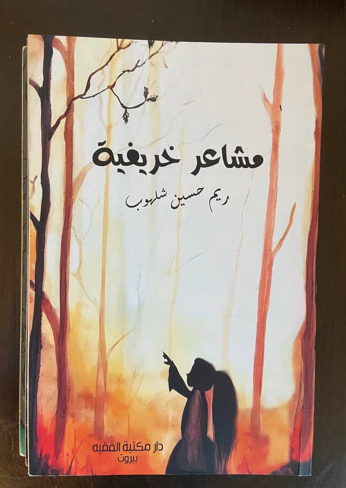
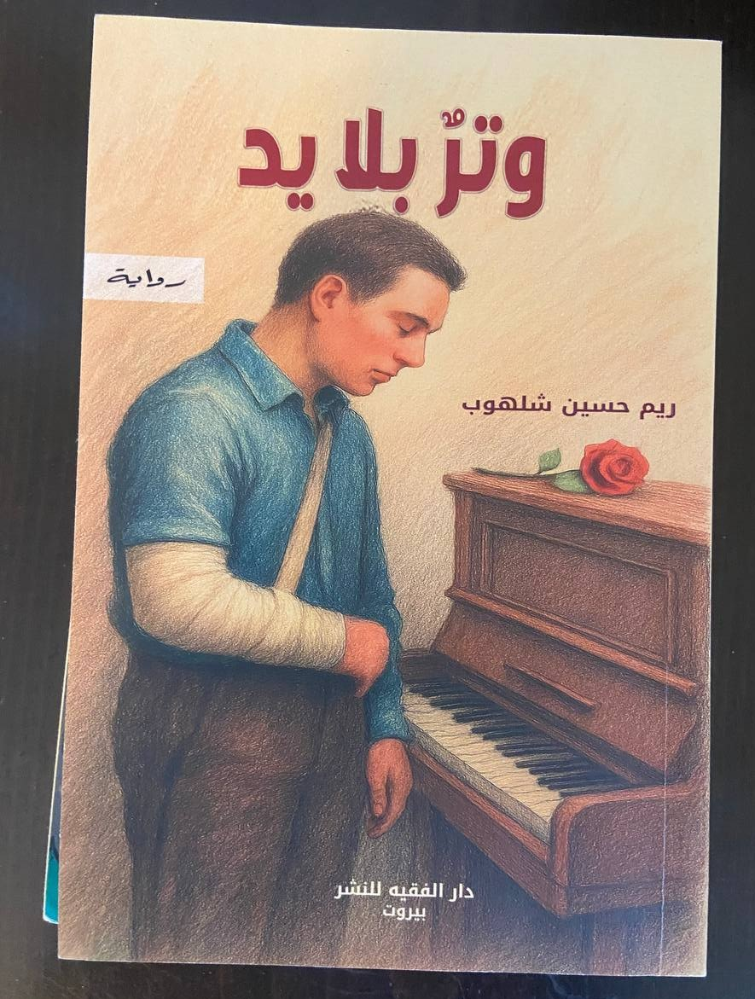
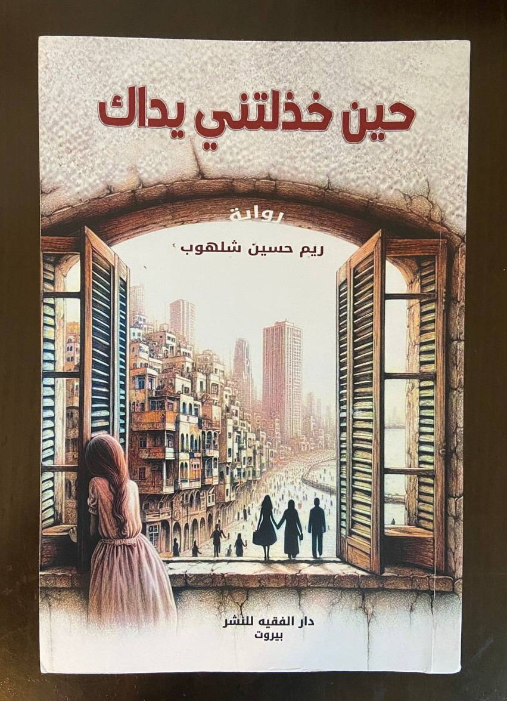
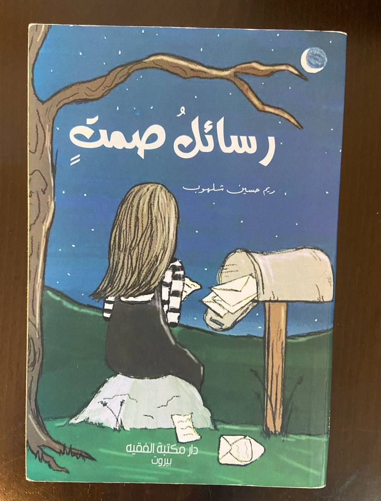
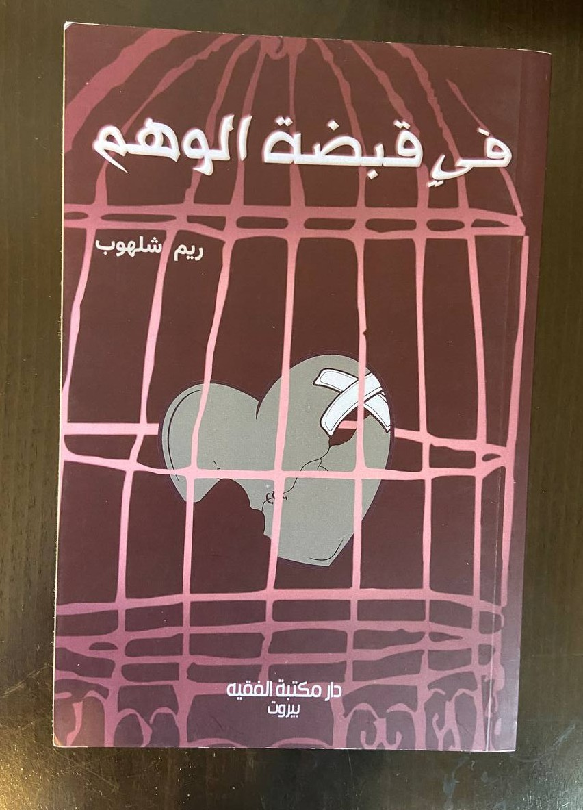

Bachelor’s Degree in English–Arabic Translation
Islamic University
Studied translation with attention to meaning, voice, imagery, and cultural context across languages.
A life shaped by language
I’m Reem Shalhoub — a Lebanese writer, novelist, and literary translator exploring love, memory, identity, and the quiet details that make us human.
A little about me
I write about what remains — after love, after loss, after the moments that quietly change us.
I’m a Lebanese Arabic writer, novelist, and prose writer, as well as an English–Arabic literary translator. My work moves between poetry, prose, fiction, and reflection, often returning to the emotional landscapes of memory, longing, identity, and human connection.
Whether I am writing an original piece or carrying a text into another language, I care about the same things: voice, rhythm, imagery, emotional honesty, and the small cultural nuances that give words their life.
The path so far
A background in translation, shaped by literary work and a lasting curiosity about how people tell their stories.
Islamic University
Studied translation with attention to meaning, voice, imagery, and cultural context across languages.
With Sworn Translator Malak Karouni
Altaer.com · English → Arabic
Lebanon
The languages I live in
Fluency is not only about vocabulary; it is also about tone, context, and the feeling a sentence leaves behind.
Language levels are presented as a personal overview, not a formal certification.
Between languages, words change their form,
but the emotions they carry remain.
— A thought on translation
✳From the notebook
A collection of words on love, absence, memory, and the fragile beauty of becoming.
أخشى أن ينتهي بي المطاف في منزل رجلٍ آخر.
رجلٌ لا أفهم صريح كلامه، بينما كنتُ أُجيد الإنصات إلى طقوس صمتك.
كيف لي أن أسكن حضنه دون أن يسمع همس قلبي باسمك؟
وكيف أُخفي وجهك عن عينيَّ كي لا يرى انعكاسك فيهما؟
أخاف أن أقضي عمري باحثةً عنك في تفاصيله،
أخاف أن أُنجب طفلةً لا تحمل جمال عينيك، فتكبر وأنا أحدثها عن رجلٍ يشبه الأحلام.
فكيف تراني أنساك، وأنا ما عرفتُ الحبَّ إلا بين يديك؟
ما زلتُ أحبك، وكيف لا، والياسمين ما زال يعبق في صدري كلما عبرت عيناك خيوط الذاكرة.
ما زلتُ أحبك، وكيف أنسى، والطيور ما زالت تهاجر إلى صدري، تبحث عن دفء… بل عن نارٍ تشتعل انتظارًا لعودتك.
ما زلتُ أحبك، وآذار في صدري ينتظر ربيعًا يسقيه فؤادك، فينبت أقحوانة حبٍ أزيّن بها شعري.
ما زلتُ أحبك… بل أحبك بصبرٍ فارغٍ منك، فهل تعود إن أخبرتك بطول وجعي؟
أم أبقى أنا هنا… أعدّ الغياب، وأسمّيه حبًا كي لا أنطفئ؟
ثَمّة أماكن لا نغادرها تمامًا، وإن ابتعدت بنا عنها الطرق.
نحملها في صمت، مطويّةً في طيّات الذاكرة، عالقةً بين ما كان وما ظلّ فينا من حنين؛ نحملها حتى بعد أن تُغلَق الأبواب، وتمضي بنا الحياة إلى جهات لم نكن نعرف أننا سنصل إليها. وأحيانًا، لا تحتاج الذاكرة إلا إلى رائحة مألوفة، أو نغمٍ يتسرّب من غرفة بعيدة، أو ذلك الضوء الخافت الذي يهبط على مساء خريفي، حتى تستردّ أمامنا حياةً كاملة كأنها لم تغب يومًا.
للذاكرة جغرافيّتها الخاصة؛ وهي، على غرابتها، لا تقيس المسافات بما تفصل بين الأماكن، بل بما تتركه الأشياء في أرواحنا.
A short story
She found the letter on a morning that had begun like any other.
It was hidden between the pages of an old book, its edges yellowed, its envelope still sealed. Her name was not written on it. Neither was his.
For a moment, she simply held it, wondering how many years could survive inside a single envelope.
She remembered writing it. She remembered the night, too — the rain against the window, the trembling of her hands, the certainty that if she put everything she felt into words, someone would finally understand.
She had been younger then. Younger, and convinced that being understood could save a person.
The words were hers, but the voice felt unfamiliar.
“I am afraid of losing you.”
Translation & language
Literary translation is not simply moving words from one language to another. It is listening for the voice beneath them — and helping it be heard.
English — Original
Sometimes, we outgrow the places we once called home. Not because they have changed, but because something within us has. We return to them carrying memories, only to discover that memory has preserved a world that no longer exists. Perhaps this is what growing older means: learning to love what was without asking it to return. Some doors are meant to close, not as endings, but as quiet invitations to become someone new.
Arabic — Literary translation
أحيانًا نتجاوز الأمكنة التي سمّيناها يومًا أوطانًا، لا لأنها تبدّلت، بل لأن شيئًا في داخلنا قد تبدّل.
نعود إليها محمّلين بالذكريات، فنكتشف أن الذاكرة احتفظت بعالمٍ لم يعد له وجود.
لعلّ هذا هو أحد معاني النضج: أن نتعلّم أن نحبّ ما كان، دون أن نطالبه بالعودة.
فبعض الأبواب لا تُغلق لتكون نهايات، بل لتفتح لنا، في صمت، سبيلًا إلى أن نصير أشخاصًا آخرين.
English — Original
Some memories do not fade with time; they simply learn how to become quieter. They wait for us in familiar songs, in the scent of rain, or in the sudden silence of an ordinary afternoon. We may think we have moved beyond them, until one small detail brings everything back.
Perhaps healing is not about leaving the past behind, but learning to carry it without letting it weigh us down. Some memories will always belong to us — not because we want to hold on to them, but because they have quietly shaped who we became.
French — Literary translation
Certains souvenirs ne s’effacent pas avec le temps ; ils apprennent simplement à se faire plus discrets. Ils nous attendent dans une chanson familière, dans l’odeur de la pluie ou dans le silence soudain d’un après-midi ordinaire. Nous pouvons croire que nous les avons dépassés, jusqu’à ce qu’un simple détail fasse tout remonter à la surface.
Peut-être que guérir ne consiste pas à laisser le passé derrière soi, mais à apprendre à le porter sans lui permettre de nous alourdir. Certains souvenirs nous appartiendront toujours — non pas parce que nous voulons nous y accrocher, mais parce qu’ils ont, en silence, façonné la personne que nous sommes devenus.
Arabic — Original · English — Literary translation
لم أعد أجرؤ أن أشتاقك على مرأى العلن، صرتُ أشتاقك كما يشتاق المذنب إلى خطاياه… بصمتٍ حذر، وبإدراكٍ كامل لثقل الذنب.
بين الثواني، أشتاق إلى حضنك الدافئ، فتعبر عقارب الساعة بثقلٍ مرهق فوق أنفاسي. وفي مرارة الدقائق، أحدّق برهةً في هاتفي بانتظارٍ مخيّب، انتظار عقلٍ يعلم جيدًا أنّه لا يفعل سوى الربت على كتف قلبٍ ما زال يتألّم.
كيف لي أن أنفض عن كاهلي غبار الحنين وأمضي؟
English translation
I no longer dare to miss you where anyone might see. I have learned to miss you the way a sinner longs for his sins — with cautious silence and the full awareness of the weight of guilt.
Between one second and the next, I ache for the warmth of your arms, while the hands of the clock drag heavily over my breath. In the bitterness of the passing minutes, I find myself staring at my phone, waiting for a disappointment I already know is coming. It is the kind of waiting in which the mind knows perfectly well that it is doing nothing but gently patting the shoulder of a heart that still hurts.
How am I supposed to brush the dust of longing from my shoulders and walk away?
Have a text in mind?
For literary translation, proofreading, editing, or language collaboration.
Between two covers
Novels and prose collections shaped by emotion, memory, and the many ways a person learns to live with what remains.

01Prose collection
تتنقّل هذه المجموعة بين الحب والحنين والفقد والتحوّلات الداخلية، مستعيرةً من الخريف صورته بوصفه موسمًا للتغيّر والذبول والذكريات.

02Novel
رواية تستحضر أثر الحرب في الجنوب اللبناني من خلال حكاية إنسانية تتقاطع فيها الذاكرة مع الفقد والخوف، وتبحث في التمسّك بالحياة وسط الخراب.

03Novel
رواية عاطفية تتأمّل في الحب حين يتحوّل من ملاذ إلى خيبة، وفي مواجهة ما تبقّى من علاقة انتهت في الواقع ولم تنتهِ في الداخل.

04Prose collection
نصوص تتّخذ شكل رسائل غير مرسلة، تحمل الحب والعتاب والاشتياق والأسئلة العالقة بين ما نشعر به وما نجرؤ على قوله.

05Prose collection
مجموعة تستكشف المسافة بين الحقيقة وما نتمنّى أن تكون عليه الأشياء، وبين التعلّق والخيبة والأمل ومحاولات النجاة من أوهامنا.
Each book holds a different way of looking at the human heart.
The next chapter begins here
For literary collaborations, translation projects, publications, editing, or simply to connect, I’d be happy to hear from you.
Write me a note“Every word carries a story; every story deserves to be heard.”